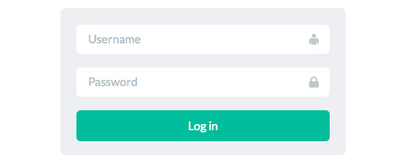
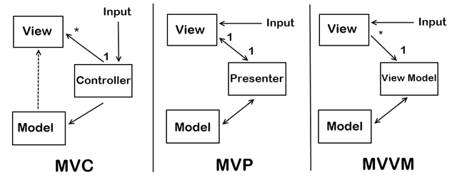

MV* Patterns in JavaScript
Created for

Created by
MVC (Model View Controller)
The Model-View-Controller paradigm
history
- suggested in the late 1970s
- during 1980s, became heavily used in Smalltalk (the language that made classes famous).
why && when to use?
- when you have to create rich, interactive user interfaces
- encourages improved application architecture through a separation of concerns.
- separating out the application logic from the user interface allows the reuse of models for other interfaces in the application
MVC in JavaScript
MVC or its variations (MV* family) are the bases of: Backbone.js, Knockout.js, Ember.js, AngularJS, Vue.js and so...on.
the original MVC concept
- A Model represented domain-specific data and was ignorant of the user-interface (Views and Controllers). When a model changed, it would inform its observers.
- A View represented the current state of a Model. The Observer pattern was used for letting the View know whenever the Modxel was updated or modified.
- Presentation was taken care of by the View, but there wasn't just a single View and Controller - a View-Controller pair was required for each section or element being displayed on the screen.
- The Controllers role in this pair was handling user interaction (such as key-presses and actions e.g. clicks), making decisions for the View.

- Model
- is where the data leaves (from flat files to large RDBMS)
- View
- is what the user see, i.e. a visual representation of the model
- Controller
- is responsible for updating the model after user interaction. Usually contains all the logic and business rules to update fields on the model
Model Example
class LoginModel{
UserName: string;
Password: string;
RememberMe: bool;
LoginSuccessful: bool;
LoginErrorMessage: string;
Timestamp: date;
}
View Example
{kind=link}
Controller Example
var LoginController = (function () {
function LoginController(model) {
this.model = model;
}
LoginController.prototype.Login = function (userName, password,rememberMe) {
this.model.UserName = userName;
this.model.Password = password;
this.model.RememberMe = rememberMe;
if (this.checkPassword(userName, password))
this.model.LoginSuccessful;
else {
this.model.LoginSuccessful = false;
this.model.LoginErrorMessage = "Incorrect username or
password";
}
};
return LoginController;
})();
MVC Practice - simple MVC calc app
MVP (Model View Presenter)
- Model-View-Presenter (MVP) is a derivative of the MVC design pattern which focuses on improving presentation logic
- Well-known in Microsoft world (WPF, Silverlight)
{kind=link}
- The presenter is aware of both the view and the model
- The view is unaware of the model
- The model is unaware of the view
MVVM (Model View ViewModel)
{kind=link}
- the View holds a reference to the View Model
- the ViewModel has no information about the View
- the View has no idea about the Model
Visual Comparison
{kind=link}
Picture from MVVM Compared To MVC and MVP by geekswithblogs.net
These slides are based on
customised version of
framework